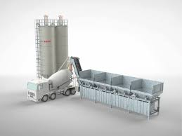
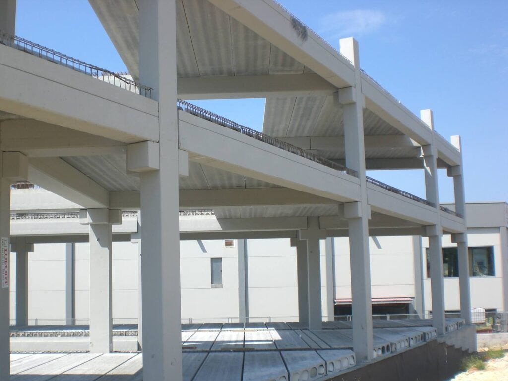

← Volver a productos


Infraestructura ganadera
Parrillas para naves de estabulación
Soluciones prefabricadas resistentes para naves ganaderas, con una estructura diseñada para soportar uso continuo y condiciones de servicio exigentes.
Uso
Naves ganaderas
Resistencia
Alta capacidad portante
Durabilidad
Uso continuo
Resistencia estructural
Diseñadas para trabajar en condiciones reales de uso, garantizando estabilidad y seguridad en el entorno de explotación.
- Geometrías robustas y repetibles.
- Facilidad de mantenimiento en servicio.
- Adaptación a distintos tipos de nave.
Aplicaciones habituales
Ideal para instalaciones ganaderas, explotaciones agroindustriales y obras que requieren superficies resistentes y duraderas.

